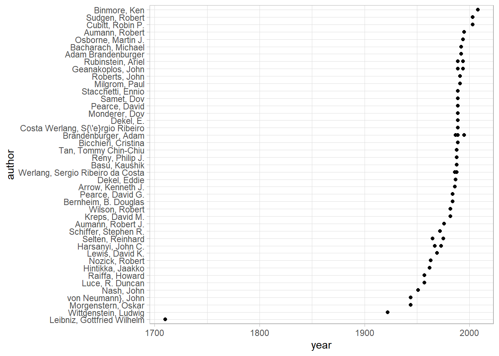
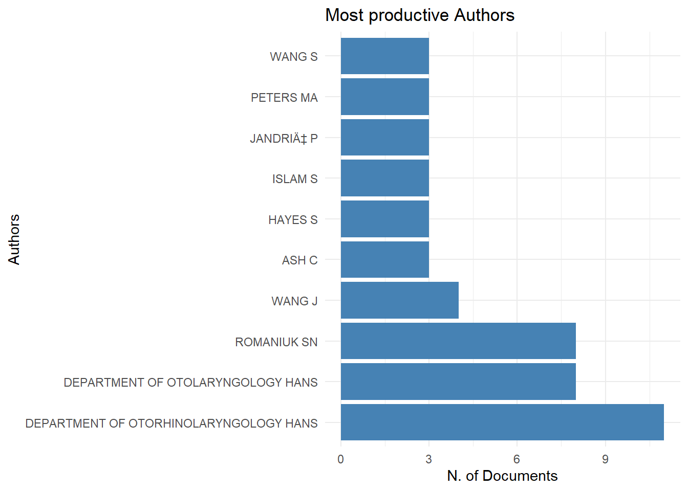
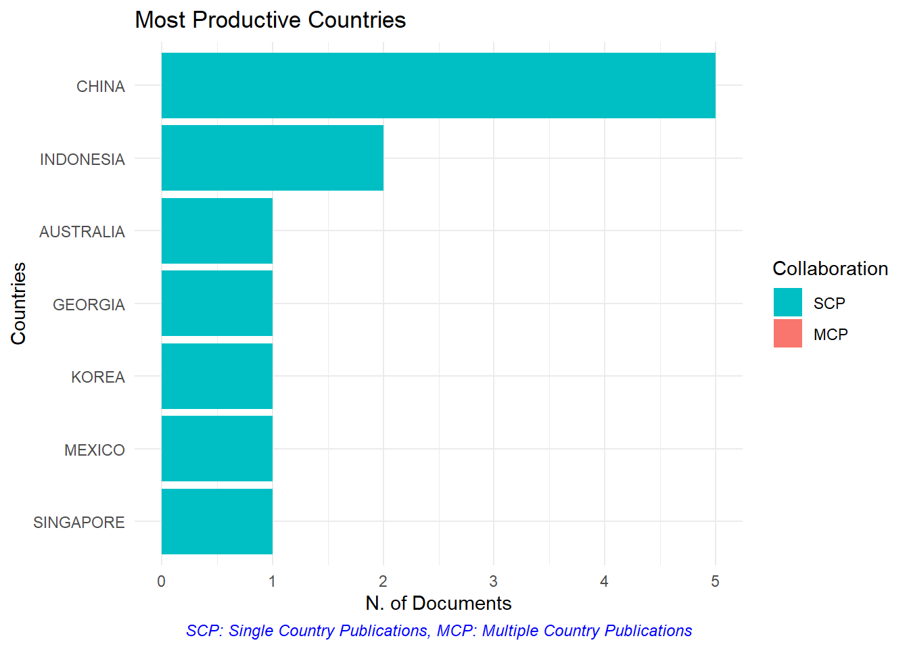
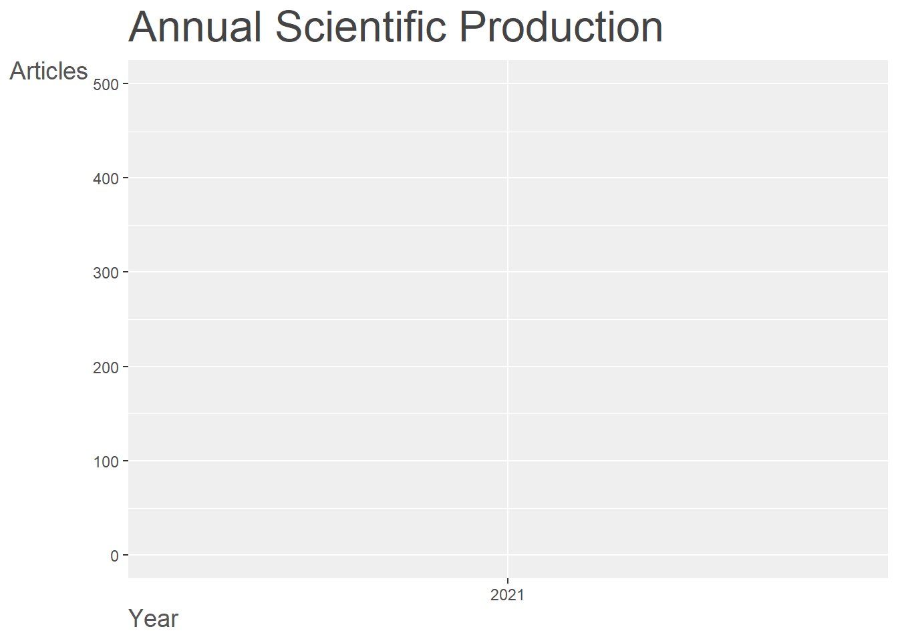
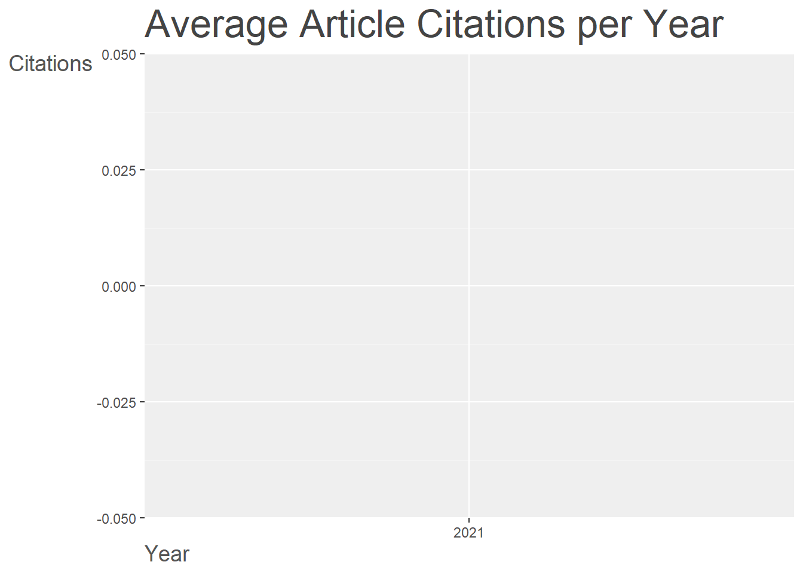
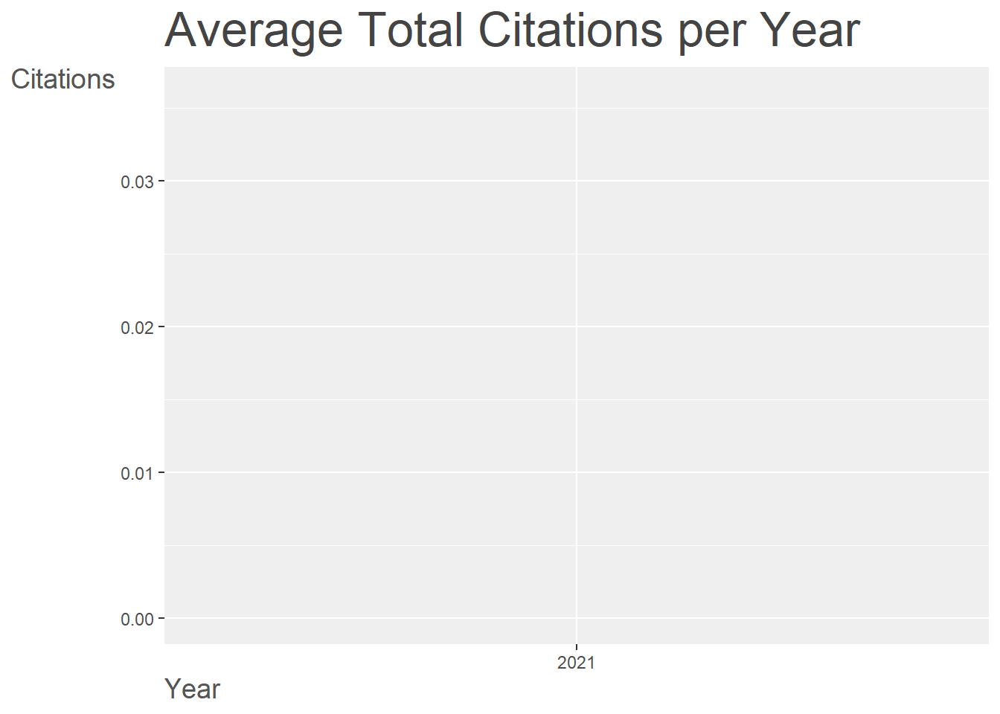

1 논문 데이터
Dimensions 웹사이트에서 연구논문에 대한 서지목록을 가져온다. BibTeX은 \(\LaTeX\)와 같은 인쇄저작시스템과 결합하여 문서 서지관리를 위해 제작된 파일형식으로 다음과 같은 형태로 구성된다.

다음과 같이 도널드 쿠누쓰 교수의 1997년 책을 BibTeX 형식에 맞춰 파일에 저장시키고 나서 @knuth1997art 같이 컴퓨터 프로그래밍 예술[1]을 참조하면 저작물 작성에 유용하다.
\[1. Knuth DE. The art of computer programming. Pearson Education; 1997.\]
@book{knuth1997art,
title={The art of computer programming},
author={Knuth, Donald Ervin},
volume={3},
year={1997},
publisher={Pearson Education}
}2 BibTeX 데이터프레임
BibTeX 형태의 정보가 쌓이게 되면 이를 변환하여 데이터프레임으로 변환시킬 수 있다. 정형 데이터로부터 다양한 분석과 경우에 따라서는 예측모형 구축도 가능하게 된다.

bib2df 팩키지의 도움으로 BibTeX 파일을 데이터프레임으로 변환시킬 수 있다. bib2df에 기본으로 내장된 BibTeX 파일을 대상으로 작업을 수행해보자.
library(tidyverse)
library(bib2df)
bibtex_dat <- system.file("extdata", "LiteratureOnCommonKnowledgeInGameTheory.bib", package = "bib2df")
readr::read_lines(bibtex_dat) %>%
head(10) [1] "@Article{Arrow1986,"
[2] " Title = {Rationality of Self and Others in an Economic System},"
[3] " Author = {Arrow, Kenneth J.},"
[4] " Journal = {The Journal of Business},"
[5] " Year = {1986},"
[6] " Number = {4},"
[7] " Pages = {385--399},"
[8] " Volume = {59}"
[9] "}"
[10] "" bib2df() 함수를 통해 BibTeX 파일을 정형 데이터프레임으로 변환시킬 수 있다. 데이터프레임으로 변환이 되면 이후 다양한 분석작업을 수행할 수 있게 된다.
bibtex_tbl <- bib2df(bibtex_dat)
bibtex_tbl %>%
sample_n(10) %>%
janitor::clean_names() %>%
select(bibtexkey, author, title, year, journal) %>%
reactable::reactable()데이터프레임으로 변환이 되었기 때문에 dplyr와 ggplot을 결합시켜 탐색적 데이터분석 업무를 후속으로 이어 작업하면 좋다.
bibtex_tbl %>%
janitor::clean_names() %>%
select(year, author) %>%
unnest(cols = author) %>%
mutate(author = fct_reorder(author, year)) %>%
ggplot(aes(x = year, y = author)) +
geom_point() +
theme_light()
3 BibTeX 원자료 준비
https://www.dimensions.ai/ 웹사이트 가입하고 코로나19와 자연어처리 관련 논문을 추출하여 데이터를 준비해보자.
(Covid-19 OR CORONAVIRUS) AND (NLP OR Natural Language Processing)
다운로드 받은 데이터를 불러와서 본격적인 분석을 위한 준비를 한다.
covid_tbl <- bib2df("data/Dimensions-Publication-citations-2021-01-22_06-55-18.bib")
covid_tbl %>%
sample_n(10) %>%
janitor::clean_names() %>%
select(bibtexkey, author, title, year, journal) %>%
reactable::reactable()4 참고문헌 분석1
library(bibliometrix)
covid_bib <- convert2df(file = "https://export.uberresearch.com/2021-01-22/6b0265153305b9c30071e0da2bb0a3ec/Dimensions-Publication-2021-01-22_07-16-41.csv.zip", dbsource = "dimensions", format = "csv")
Converting your dimensions collection into a bibliographic dataframe
Done!covid_results <- biblioAnalysis(covid_bib, sep = ";")
covid_summary <- summary(object = covid_results, k = 10, pause = FALSE)
MAIN INFORMATION ABOUT DATA
Timespan 2021 : 2021
Sources (Journals, Books, etc) 254
Documents 500
Average years from publication 0
Average citations per documents 0.036
Average citations per year per doc 0.036
References 1
DOCUMENT TYPES
article 377
chapter 79
edited book 12
monograph 15
preprint 17
DOCUMENT CONTENTS
Keywords Plus (ID) 47
Author's Keywords (DE) 47
AUTHORS
Authors 2149
Author Appearances 2239
Authors of single-authored documents 93
Authors of multi-authored documents 2056
AUTHORS COLLABORATION
Single-authored documents 99
Documents per Author 0.233
Authors per Document 4.3
Co-Authors per Documents 4.48
Collaboration Index 5.35
Annual Scientific Production
Year Articles
2021 500
Annual Percentage Growth Rate 0
Most Productive Authors
Authors Articles Authors Articles Fractionalized
1 DEPARTMENT OF OTORHINOLARYNGOLOGY HANS 11 ROMANIUK SN 3.33
2 DEPARTMENT OF OTOLARYNGOLOGY HANS 8 ASH C 3.00
3 ROMANIUK SN 8 CRISTIANO F 2.00
4 WANG J 4 HINES PJ 2.00
5 ASH C 3 OECD O 2.00
6 HAYES S 3 SCANLON ST 2.00
7 ISLAM S 3 ISLAM S 1.70
8 JANDRIć P 3 GJESVIK L 1.50
9 PETERS MA 3 MANJIKIAN M 1.50
10 WANG S 3 WANG J 1.17
Top manuscripts per citations
Paper DOI TC TCperYear
1 WANG S, 2021, INFORMATION FUSION 10.1016/J.INFFUS.2020.11.005 2 2
2 KHANRA S, 2021, JOURNAL OF HOSPITALITY AND TOURISM MANAGEMENT 10.1016/J.JHTM.2020.11.004 2 2
3 LI J, 2021, SAFETY SCIENCE 10.1016/J.SSCI.2020.105093 2 2
4 GUO Z, 2021, FUTURE GENERATION COMPUTER SYSTEMS 10.1016/J.FUTURE.2020.11.028 1 1
5 WINDASARI NA, 2021, INTERNATIONAL JOURNAL OF INFORMATION MANAGEMENT 10.1016/J.IJINFOMGT.2020.102292 1 1
6 CLARK L, 2021, SMART HEALTH 10.1016/J.SMHL.2020.100168 1 1
7 ALLAM Z, 2021, LAND USE POLICY 10.1016/J.LANDUSEPOL.2020.105201 1 1
8 GARG P, 2021, TECHNOLOGICAL FORECASTING AND SOCIAL CHANGE 10.1016/J.TECHFORE.2020.120407 1 1
9 AKSHINTALA VS, 2021, JOURNAL OF GASTROENTEROLOGY AND HEPATOLOGY 10.1111/JGH.15343 1 1
10 HIE B, 2021, SCIENCE 10.1126/SCIENCE.ABD7331 1 1
NTC
1 55.6
2 55.6
3 55.6
4 27.8
5 27.8
6 27.8
7 27.8
8 27.8
9 27.8
10 27.8
Corresponding Author's Countries
Country Articles Freq SCP MCP MCP_Ratio
1 CHINA 5 0.4167 5 0 0
2 INDONESIA 2 0.1667 2 0 0
3 AUSTRALIA 1 0.0833 1 0 0
4 GEORGIA 1 0.0833 1 0 0
5 KOREA 1 0.0833 1 0 0
6 MEXICO 1 0.0833 1 0 0
7 SINGAPORE 1 0.0833 1 0 0
SCP: Single Country Publications
MCP: Multiple Country Publications
Total Citations per Country
Country Total Citations Average Article Citations
1 AUSTRALIA 0 0
2 CHINA 0 0
3 GEORGIA 0 0
4 INDONESIA 0 0
5 KOREA 0 0
6 MEXICO 0 0
7 SINGAPORE 0 0
Most Relevant Sources
Sources Articles
1 93
2 SCIENCE 22
3 CYPRUS JOURNAL OF MEDICAL SCIENCES 16
4 EMERGING INFECTIOUS DISEASES 16
5 RESEARCH SQUARE 14
6 ADDICTA THE TURKISH JOURNAL ON ADDICTIONS 8
7 SHS WEB OF CONFERENCES 7
8 LECTURE NOTES IN NETWORKS AND SYSTEMS 6
9 APPLIED SOFT COMPUTING 4
10 COMPUTERS IN HUMAN BEHAVIOR 4
Most Relevant Keywords
Author Keywords (DE) Articles Keywords-Plus (ID) Articles
1 HUMANS 4 HUMANS 4
2 COVID-19 3 COVID-19 3
3 ADULT 2 ADULT 2
4 AGED 2 AGED 2
5 COGNITION 2 COGNITION 2
6 FEMALE 2 FEMALE 2
7 MALE 2 MALE 2
8 MIDDLE AGED 2 MIDDLE AGED 2
9 ACCESS TO INFORMATION 1 ACCESS TO INFORMATION 1
10 ADOLESCENT 1 ADOLESCENT 1covid_summary$MainInformation
[1] "\n\nMAIN INFORMATION ABOUT DATA\n\n" "Timespan 2021 : 2021 \n"
[3] "Sources (Journals, Books, etc) 254 \n" "Documents 500 \n"
[5] "Average years from publication 0 \n" "Average citations per documents 0.036 \n"
[7] "Average citations per year per doc 0.036 \n" "References 1 \n"
[9] "\nDOCUMENT TYPES \n" "article 377 \n"
[11] "chapter 79 \n" "edited book 12 \n"
[13] "monograph 15 \n" "preprint 17 \n"
[15] "\nDOCUMENT CONTENTS\n" "Keywords Plus (ID) 47 \n"
[17] "Author's Keywords (DE) 47 \n" "\nAUTHORS\n"
[19] "Authors 2149 \n" "Author Appearances 2239 \n"
[21] "Authors of single-authored documents 93 \n" "Authors of multi-authored documents 2056 \n"
[23] "\nAUTHORS COLLABORATION\n" "Single-authored documents 99 \n"
[25] "Documents per Author 0.233 \n" "Authors per Document 4.3 \n"
[27] "Co-Authors per Documents 4.48 \n" "Collaboration Index 5.35 \n"
[29] "\n"
$MainInformationDF
Description Results
1 MAIN INFORMATION ABOUT DATA
2 Timespan 2021:2021
3 Sources (Journals, Books, etc) 254
4 Documents 500
5 Average years from publication 0
6 Average citations per documents 0.036
7 Average citations per year per doc 0.036
8 References 1
9 DOCUMENT TYPES
10 article 377
11 chapter 79
12 edited book 12
13 monograph 15
14 preprint 17
15 DOCUMENT CONTENTS
16 Keywords Plus (ID) 47
17 Author's Keywords (DE) 47
18 AUTHORS
19 Authors 2149
20 Author Appearances 2239
21 Authors of single-authored documents 93
22 Authors of multi-authored documents 2056
23 AUTHORS COLLABORATION
24 Single-authored documents 99
25 Documents per Author 0.233
26 Authors per Document 4.3
27 Co-Authors per Documents 4.48
28 Collaboration Index 5.35
29
$AnnualProduction
Year Articles
1 2021 500
$AnnualGrowthRate
[1] 0
$MostProdAuthors
Authors Articles Authors Articles Fractionalized
1 DEPARTMENT OF OTORHINOLARYNGOLOGY HANS 11 ROMANIUK SN 3.33
2 DEPARTMENT OF OTOLARYNGOLOGY HANS 8 ASH C 3.00
3 ROMANIUK SN 8 CRISTIANO F 2.00
4 WANG J 4 HINES PJ 2.00
5 ASH C 3 OECD O 2.00
6 HAYES S 3 SCANLON ST 2.00
7 ISLAM S 3 ISLAM S 1.70
8 JANDRIć P 3 GJESVIK L 1.50
9 PETERS MA 3 MANJIKIAN M 1.50
10 WANG S 3 WANG J 1.17
$MostCitedPapers
Paper DOI TC TCperYear
1 WANG S, 2021, INFORMATION FUSION 10.1016/J.INFFUS.2020.11.005 2 2
2 KHANRA S, 2021, JOURNAL OF HOSPITALITY AND TOURISM MANAGEMENT 10.1016/J.JHTM.2020.11.004 2 2
3 LI J, 2021, SAFETY SCIENCE 10.1016/J.SSCI.2020.105093 2 2
4 GUO Z, 2021, FUTURE GENERATION COMPUTER SYSTEMS 10.1016/J.FUTURE.2020.11.028 1 1
5 WINDASARI NA, 2021, INTERNATIONAL JOURNAL OF INFORMATION MANAGEMENT 10.1016/J.IJINFOMGT.2020.102292 1 1
6 CLARK L, 2021, SMART HEALTH 10.1016/J.SMHL.2020.100168 1 1
7 ALLAM Z, 2021, LAND USE POLICY 10.1016/J.LANDUSEPOL.2020.105201 1 1
8 GARG P, 2021, TECHNOLOGICAL FORECASTING AND SOCIAL CHANGE 10.1016/J.TECHFORE.2020.120407 1 1
9 AKSHINTALA VS, 2021, JOURNAL OF GASTROENTEROLOGY AND HEPATOLOGY 10.1111/JGH.15343 1 1
10 HIE B, 2021, SCIENCE 10.1126/SCIENCE.ABD7331 1 1
NTC
1 55.6
2 55.6
3 55.6
4 27.8
5 27.8
6 27.8
7 27.8
8 27.8
9 27.8
10 27.8
$MostProdCountries
Country Articles Freq SCP MCP MCP_Ratio
1 CHINA 5 0.4167 5 0 0
2 INDONESIA 2 0.1667 2 0 0
3 AUSTRALIA 1 0.0833 1 0 0
4 GEORGIA 1 0.0833 1 0 0
5 KOREA 1 0.0833 1 0 0
6 MEXICO 1 0.0833 1 0 0
7 SINGAPORE 1 0.0833 1 0 0
$TCperCountries
Country Total Citations Average Article Citations
1 AUSTRALIA 0 0
2 CHINA 0 0
3 GEORGIA 0 0
4 INDONESIA 0 0
5 KOREA 0 0
6 MEXICO 0 0
7 SINGAPORE 0 0
$MostRelSources
Sources Articles
1 93
2 SCIENCE 22
3 CYPRUS JOURNAL OF MEDICAL SCIENCES 16
4 EMERGING INFECTIOUS DISEASES 16
5 RESEARCH SQUARE 14
6 ADDICTA THE TURKISH JOURNAL ON ADDICTIONS 8
7 SHS WEB OF CONFERENCES 7
8 LECTURE NOTES IN NETWORKS AND SYSTEMS 6
9 APPLIED SOFT COMPUTING 4
10 COMPUTERS IN HUMAN BEHAVIOR 4
$MostRelKeywords
Author Keywords (DE) Articles Keywords-Plus (ID) Articles
1 HUMANS 4 HUMANS 4
2 COVID-19 3 COVID-19 3
3 ADULT 2 ADULT 2
4 AGED 2 AGED 2
5 COGNITION 2 COGNITION 2
6 FEMALE 2 FEMALE 2
7 MALE 2 MALE 2
8 MIDDLE AGED 2 MIDDLE AGED 2
9 ACCESS TO INFORMATION 1 ACCESS TO INFORMATION 1
10 ADOLESCENT 1 ADOLESCENT 1plot(x = covid_results, k = 10, pause = FALSE)
covid_network <- biblioNetwork(covid_bib, analysis = "coupling", network = "references", sep = ". ")CS <- conceptualStructure(covid_bib, field="ID", method="CA", minDegree=2, clust=3, stemming=FALSE, labelsize=10, documents=2)데이터 과학자 이광춘 저작
kwangchun.lee.7@gmail.com